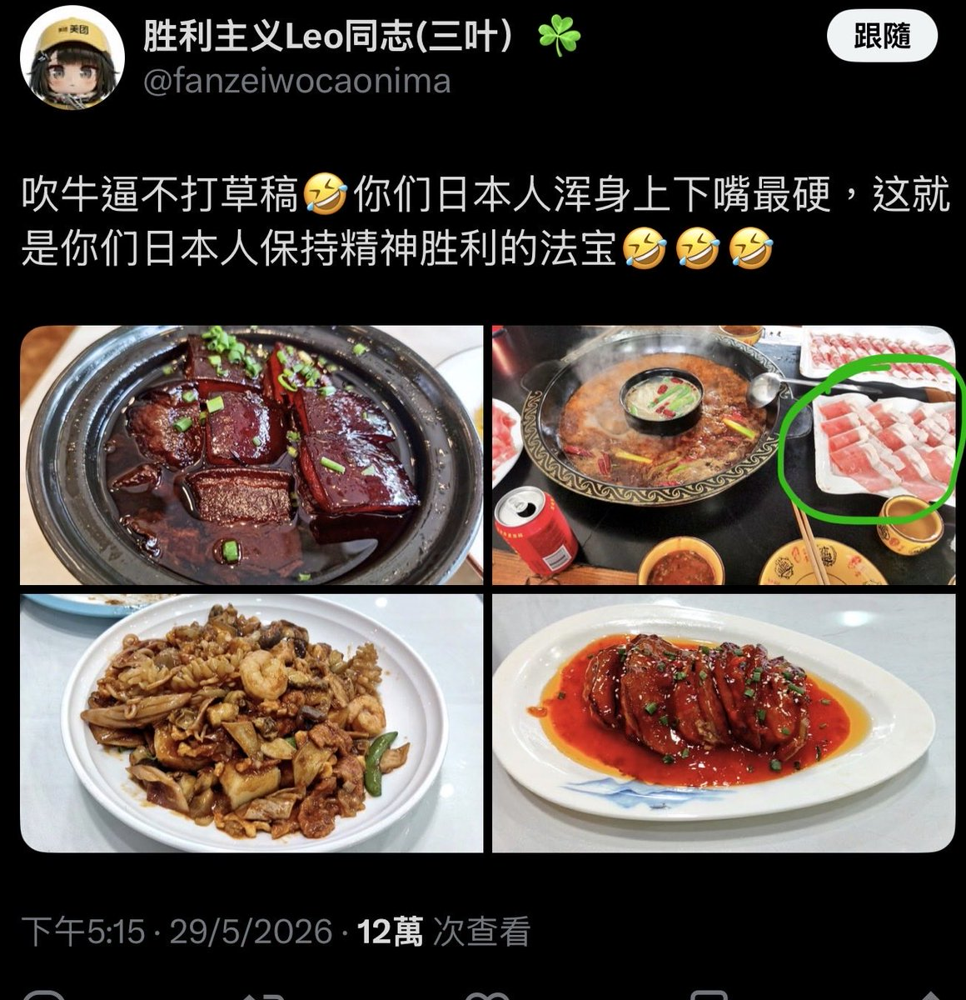

文芸🍁空白子🍥
@bungeikuhakushi
@canton_ss 笑死 隨便喺網上搵幾個網圖就開始話家常菜 踩一捧一 又以為自己高人一等喇 唔知道邊度黎既優越感

宋岑臨 🇹🇼
@canton_ss
綠色圈著的那種寧肉是最廉價的，在香港三四十元就能買到一公斤，大家樂才用這種廉價牛肉，不懂你在自嗨什麼
至於其他食物，看起來都沒有燒味舖的一份燒鵝或燒排骨好吃
東北蟎蟲還是回你的布里亞特老家吃人肉去吧 https://t.co/URnBfYOnag https://t.co/parjVmkevU